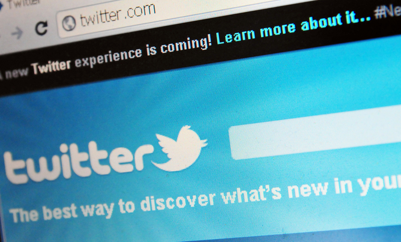

With a tweet, Twitter kicks off next big tech IPO
Social media giant tweets it has submitted "confidential" filing to securities regulators.
Twitter said Thursday that it filed for an initial public offering, setting the stage for the most high-profile technology stock market debut since Facebook's troubled share sale last year.
Twitter announced the filing on its own social media messaging service, saying: "We've confidentially submitted an S-1 to the SEC for a planned IPO. This Tweet does not constitute an offer of any securities for sale."
The company followed that up with a second tweet, saying "back to work" and attached a photo of employees at Twitter headquarters in San Francisco.
The tweets were swiftly re-tweeted thousands of times and set off viral chatter across Silicon Valley, where many of the venture capitalists who backed Twitter are based.
George Zachary of Charles River Ventures thanked Twitter founders Jack Dorsey, Evan Williams and Biz Stone and CEO Dick Costolo.
"Still hold every single share from our first-round investment," Zachary tweeted. "My over/under for Twitter at end of first day of trading: $25B," tweeted David Sacks, a former PayPal executive and founder of start-up Yammer, which Microsoft bought for $1.2 billion last year.